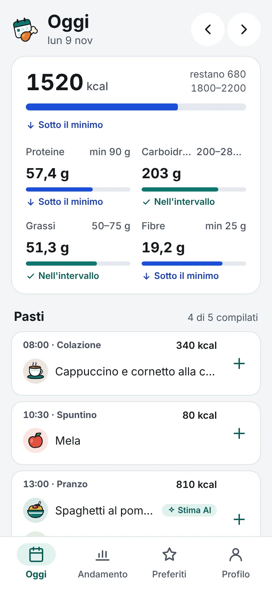
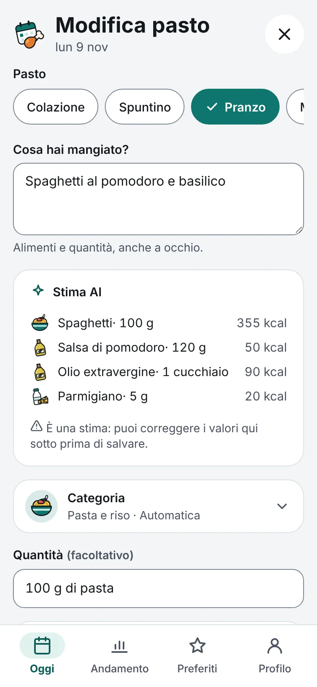
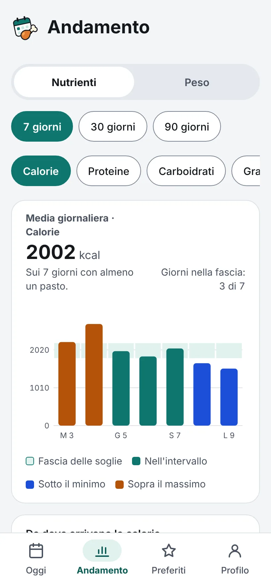
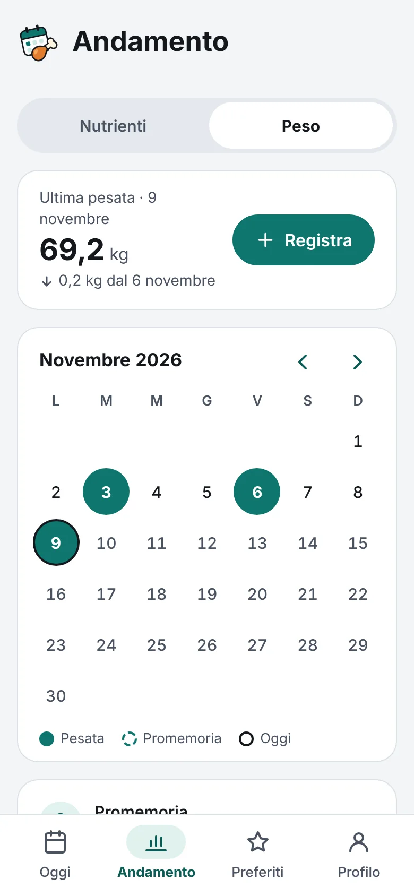

Dentro l'app
Con una chiave API Anthropic, il pulsante Stima calcola kcal e macro dalla descrizione o da una foto del piatto. L'amministratore fissa i limiti: richieste al giorno per utente e budget mensile dell'istanza.
Versione 1.3.1 · open source
Mealler è un diario alimentare self-hosted e multiutente, da installare come app sul telefono e sul computer. Registri i pasti negli orari che decidi tu, tieni d'occhio calorie e macronutrienti rispetto alle tue soglie e, se vuoi, ti fai aiutare da Claude per i calcoli.



La tua giornata
Colazione alle 7 o alle 9, uno spuntino solo nei giorni di palestra: orari, giorni della settimana e ordine sono tuoi. Quando uno slot è passato ed è ancora vuoto, Mealler te lo ricorda con una notifica.
Cappuccino e cornetto
340 kcal
Mela
80 kcal
Spaghetti al pomodoro
510 kcal
 Yogurt greco
290 kcal
Yogurt greco
290 kcal
Funzioni
Minimo, massimo o entrambi per calorie, proteine, carboidrati, grassi e fibre. C'è anche un pulsante con i valori consigliati LARN.
Descrivi il pasto o scatta una foto: arriva la stima per ogni alimento, che puoi correggere prima di salvare.
Prodotti confezionati condivisi tra gli utenti: codice a barre, ricerca su Open Food Facts o foto dell'etichetta.
Notifiche per gli slot rimasti vuoti e per la pesata, con fascia di silenzio e pausa quando vai in vacanza.
Consulti il diario anche senza rete; i pasti inseriti restano in coda e partono appena torni online.
Grafici su 7, 30 o 90 giorni con le soglie disegnate, giorni nella fascia e un calendario delle pesate.
Salva i pasti che ripeti spesso e reinseriscili con un tocco, senza rifare i calcoli.
Più utenti sulla stessa istanza, con inviti o registrazione libera. Ognuno vede solo il proprio diario.
Novità della 1.1
Sedici categorie disegnate nello stile del logo. Mealler le riconosce dal nome del cibo, in italiano e in inglese; se non ti convince, la scegli a mano.
FruttaVerdura Legumi
Legumi Pane e cerealiPasta e riso
Pane e cerealiPasta e riso Pizza
Pizza Carne e salumiPesce
Carne e salumiPesce UovaLatte e formaggi
UovaLatte e formaggi Frutta secca
Frutta secca Grassi e condimentiDolciCaffè e tè
Grassi e condimentiDolciCaffè e tè Bevande
Bevande Alcolici
AlcoliciSchermate
Si installa dalla pagina web come una normale app, con tema chiaro e scuro e pulsanti grandi da usare con una mano.



Claude
Puoi sempre scrivere i valori a mano. Se preferisci, Claude ti aiuta in due modi, entrambi facoltativi.
Con una chiave API Anthropic, il pulsante Stima calcola kcal e macro dalla descrizione o da una foto del piatto. L'amministratore fissa i limiti: richieste al giorno per utente e budget mensile dell'istanza.
Aggiungi Mealler come connettore (MCP con OAuth 2.1, senza servizi esterni) e racconta a Claude cosa hai mangiato: lo registra lui nel diario, usando i valori esatti dei prodotti in libreria.
A pranzo spaghetti al pomodoro e un'insalata di ceci e feta
 Fatto: due voci nel Pranzo di oggi, circa 810 kcal. Sono stime: dimmi se vuoi correggerle.
Fatto: due voci nel Pranzo di oggi, circa 810 kcal. Sono stime: dimmi se vuoi correggerle.
I tuoi dati
Mealler gira in un container Docker su un NAS, un mini PC o un server. Il database SQLite sta in un volume che controlli tu, e il codice è sotto licenza AGPL: puoi leggerlo, modificarlo e verificarlo.
Installazione
Serve un computer o un NAS sempre acceso con Docker (amd64 o arm64).
git clone https://github.com/Yanez86/mealler.git
cd mealler
cp .env.example .env
docker compose pull
docker compose up -dApri l'indirizzo del server sulla porta 3000: la prima pagina crea l'account amministratore.
Per installare l'app sul telefono e ricevere le notifiche serve HTTPS: Cloudflare Tunnel, Caddy o Traefik.
Per aggiornare bastano di nuovo pull e up -d: le migrazioni del database partono da sole.